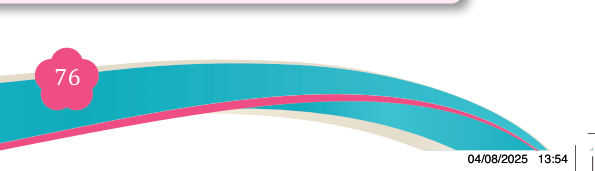
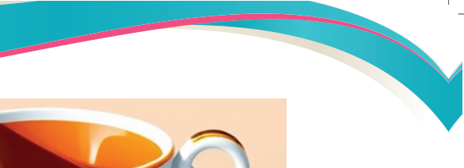
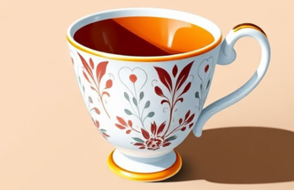
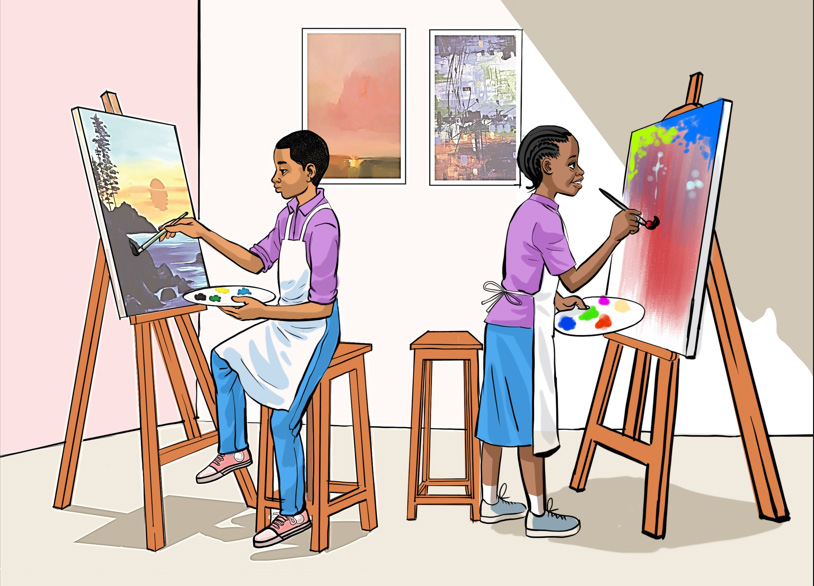
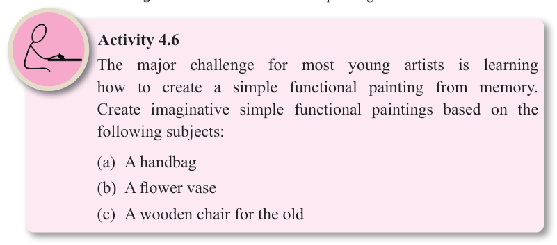

Fine Art for Secondary Schools

76

Student’s Book Form Two


Figure 4.15: A beautifully finished stage of the tea cup image

Figure 4.16: Fine art students in a painting session.

Activity 4.6
The major challenge for most young artists is learning how to create a simple functional painting from memory.
Create imaginative simple functional paintings based on the following subjects:
(a) A handbag
(b) A flower vase
(c) A wooden chair for the old
04/08/2025 13:54